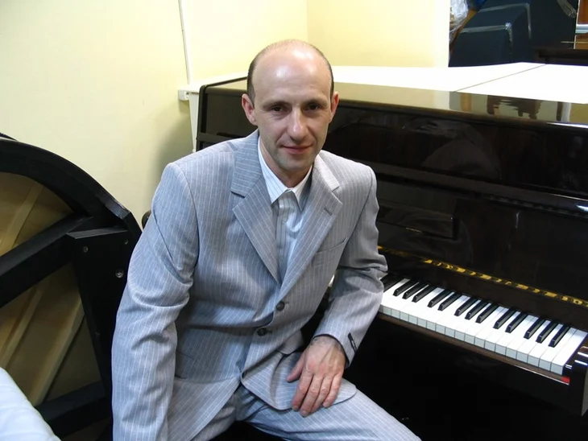
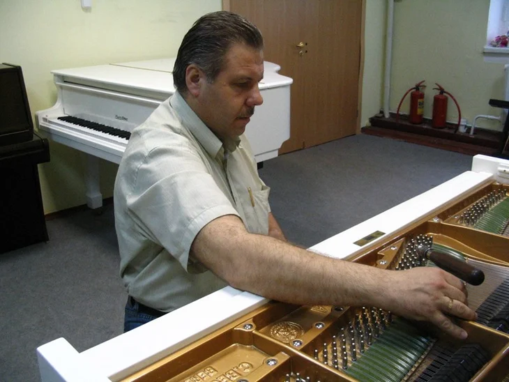
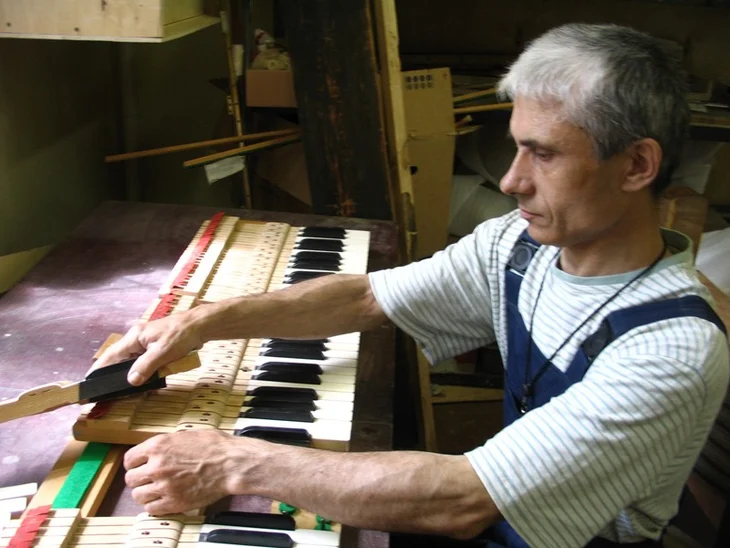
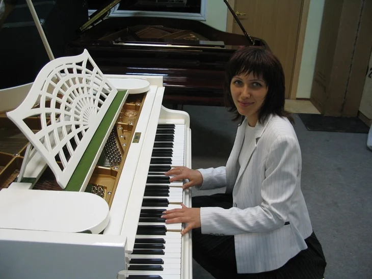
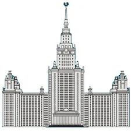
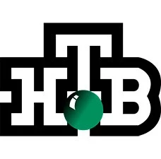
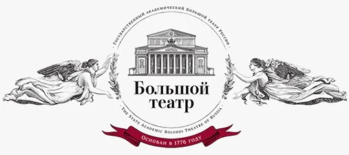

Гудков Алексей Игоревич
Директор, фортепианный мастер. Член АФМ России и Европейского союза фортепианных мастеров. Стаж более 30 лет.
В 2002 году московские фортепианные мастера объединились с компанией «Forte & Piano». До этого мы работали на фабрике «Лира», реставрировали инструменты и настраивали их в музыкальных учебных заведениях Москвы.
В 2004 и 2005 годах мы прошли обучение на фабрике Schimmel в Брауншвейге. В 2006 году побывали на фабрике Bösendorfer в Австрии. Обменивались опытом с коллегами на выставке Musikmesse во Франкфурте-на-Майне.
Наш коллектив
Директор, фортепианный мастер. Член АФМ России и Европейского союза фортепианных мастеров. Стаж более 30 лет.

Реставратор. Стаж работы по специальности более 50 лет.

Старший настройщик-интонировщик. Сертификат Schimmel, стаж более 30 лет.

Механик-настройщик. Стаж работы по специальности более 30 лет.

Менеджер салона.
Мы работаем с музыкантами и владельцами семейных инструментов, концертными площадками, ресторанами и клубами.



Как согласовать посещение, выбрать место для инструмента и рассчитать доставку.